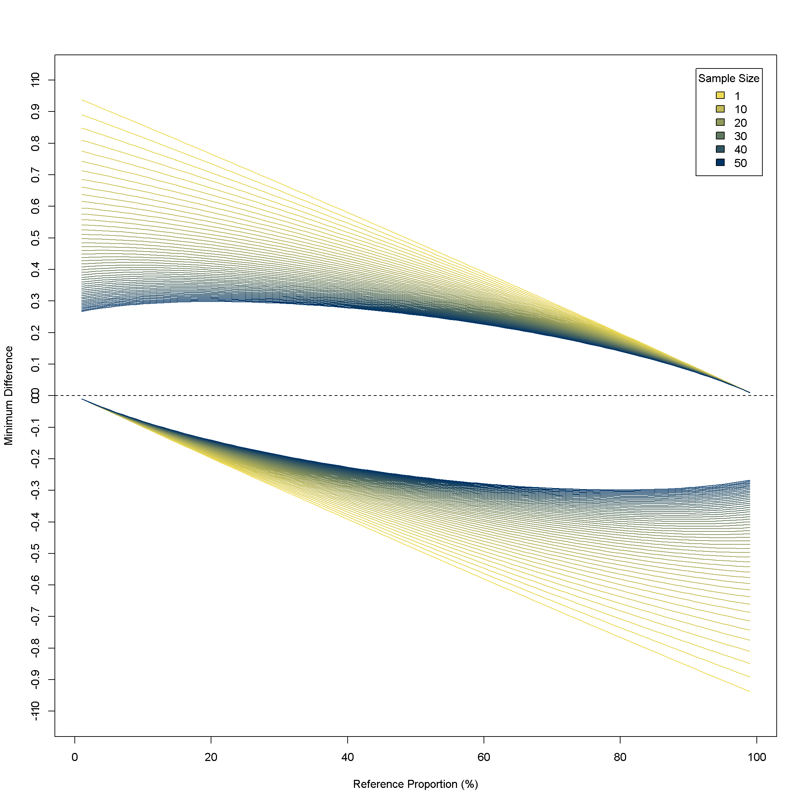

I think standard power calculations are difficult to explain in a clear way. And, I don’t think it’s because people don’t understand the basic idea - they know that a smaller \(n\) means that you won’t be able to find relatively large effects if they exist. Or in a formal way, it increases the probability of incorrectly failing to reject a null hypothesis when an alternative hypothesis is true.
But power calculations don’t really frame the question that way, because they calculate an observation size for a given effect size. Try asking someone who has been away from statistics for a while what a “meaningful effect size” is. I rarely find that people have a good answer for the question “How large of an effect are you trying to find?”. When I’ve asked people who maybe only vaguely remember statistics from college that question, they usually are a bit confused. First, how should they know? Second, don’t they want to find ‘any’ effect?
So, another way to look at a power calculation is to take \(n\) as a given and return an effect size. This is referred to as ‘minimum detectable effect,’ and I’m a little disappointed how much of the discussion about it seems confined to medical work and statistical education theory. Thomas Leeper has a good description about this approach.
For instance, let’s say we have a known proportion \(p_0\). But, also have some subgroup of size \(n\) with a proportion of \(p_1\), and we would like to know if \(n\) is “large enough” to say that \(p_0\) and \(p_1\) are different.
A standard power calculation in this case would find \(n\) required to reject the two sided null hypothesis \(H_0 : p_0 = p_1\) with a given probability of Type I error \(\alpha\) and probability of Type II error \(\beta\):
\[ n = p_1(1-p_1) \Bigg(\frac{Z_{1- \frac{\alpha}{2}} + Z_{1-\beta}}{p_1-p_0}\Bigg)^2 \]
Instead, if we solve for \(p_1-p_0\), it gets messy, but bear with me
\[ p_1- p_0 = \frac{\pm\sqrt{(Z_{1- \frac{\alpha}{2}} + Z_{1-\beta})^2(-4np_0^2 + 4np_0 + Z_{1- \frac{\alpha}{2}}^2 + 2Z_{1- \frac{\alpha}{2}}Z_{1-\beta} + Z_{1-\beta}^2)} + 2np_0 + Z_{1- \frac{\alpha}{2}}^2 + 2Z_{1- \frac{\alpha}{2}}Z_{1-\beta} + Z_{1-\beta}^2}{(2(n + Z_{1- \frac{\alpha}{2}}^2 + 2Z_{1- \frac{\alpha}{2}}Z_{1-\beta} + Z_{1-\beta}^2))} - p_0 \]
This is gross looking, but very useful. Useful enough that I made a function in R
mde_prop <- function(p0,n,alpha,beta){
z1 <- qnorm(1-alpha/2)
z2 <- qnorm(1-beta)
#constraints check
if(n + z1^2 + 2*z1*z2 + z2^2 == 0 | sqrt(-(z1 + z2)^2*(4*n*p0^2 - 4*n*p0 - z1^2 - 2*z1*z2 - z2^2)) + 2*p0*z1^2 + 4*p0*z1*z2 + 2*p0*z2^2 - z1^2 - 2*z1*z2 - z2^2 == 0) {
print("Something's wrong, interderminant value")
}
diffs <- rep(NA,2)
names(diffs) <- c("MDE Below","MDE Above")
diffs["MDE Below"] <- (-sqrt((z1 + z2)^2*(-4*n*p0^2 + 4*n*p0 + z1^2 + 2*z1*z2 + z2^2)) + 2*n*p0 + z1^2 + 2*z1*z2 + z2^2)/(2*(n + z1^2 + 2*z1*z2 + z2^2)) - p0
diffs["MDE Above"] <- (sqrt((z1 + z2)^2*(-4*n*p0^2 + 4*n*p0 + z1^2 + 2*z1*z2 + z2^2)) + 2*n*p0 + z1^2 + 2*z1*z2 + z2^2)/(2*(n + z1^2 + 2*z1*z2 + z2^2)) - p0
return(diffs)
}Let’s say we know that overall 25% of people buy persimmons every week. We want to know if Coloradans who move to the East Coast are more likely to. But, our sample only has 10 people. Is that “enough”? Well, the smallest difference we could detect, if we are being conservative about making errors, is
p0 = 0.25
n = 10
alpha=0.01
beta=0.05
diffs <- mde_prop(p0,n,alpha,beta)
print(diffs)## MDE Below MDE Above
## -0.2216230 0.5418585. That would make the East Coast Coloradans likelihood need to actually be less than 0.03 or greater than 0.79 for us to detect the difference with confidence. So, 10 seems too small in this case. Maybe we think that a sample size of 200 looks more reasonable:
##increase in n
p0 = 0.25
n = 200
alpha=0.01
beta=0.05
diffs <- mde_prop(p0,n,alpha,beta)
print(diffs)## MDE Below MDE Above
## -0.1050642 0.1459573The minimum detectable difference decreases as n increases,
##increase in n
p0 = 0.25
n = 400
alpha=0.01
beta=0.05
diffs <- mde_prop(p0,n,alpha,beta)
print(diffs)## MDE Below MDE Above
## -0.07938515 0.10070344and decreases as the tolerance loosens
## Looser Tolerance
#increase in alpha
p0 = 0.25
n = 200
alpha=0.10
beta=0.05
diffs <- mde_prop(p0,n,alpha,beta)
print(diffs)## MDE Below MDE Above
## -0.08610944 0.11177604#increase in beta
p0 = 0.25
n = 200
alpha=0.01
beta=0.20
diffs <- mde_prop(p0,n,alpha,beta)
print(diffs)## MDE Below MDE Above
## -0.08884784 0.11643435and decreases as the reference proportion becomes more extreme
##small p
p0 = 0.05
n = 200
alpha=0.01
beta=0.05
diffs <- mde_prop(p0,n,alpha,beta)
print(diffs)## MDE Below MDE Above
## -0.03557964 0.10918711##large p
p0 = 0.95
n = 200
alpha=0.01
beta=0.05
diffs <- mde_prop(p0,n,alpha,beta)
print(diffs)## MDE Below MDE Above
## -0.10918711 0.03557964For fun, I went ahead and plotted the minimum detectable effect for all the sample sizes between 1 and 100.
diffs <- replicate(replicate(rep(0,2),n = 99),n=100)
k <- 1
for (k in 1:100){
j <- 1
for ( i in seq(0.01,0.99,0.01)){
p0 = i
n = k
alpha=0.01
beta=0.05
z1 <- qnorm(1-alpha/2)
z2 <- qnorm(1-beta)
diffs[1,j,k] <- (-sqrt((z1 + z2)^2*(-4*n*p0^2 + 4*n*p0 + z1^2 + 2*z1*z2 + z2^2)) + 2*n*p0 + z1^2 + 2*z1*z2 + z2^2)/(2*(n + z1^2 + 2*z1*z2 + z2^2)) - p0
# and
diffs[2,j,k] <- (sqrt((z1 + z2)^2*(-4*n*p0^2 + 4*n*p0 + z1^2 + 2*z1*z2 + z2^2)) + 2*n*p0 + z1^2 + 2*z1*z2 + z2^2)/(2*(n + z1^2 + 2*z1*z2 + z2^2)) - p0
#and
n + z1^2 + 2*z1*z2 + z2^2 != 0
-sqrt(-(z1 + z2)^2*(4*n*p0^2 - 4*n*p0 - z1^2 - 2*z1*z2 - z2^2)) + 2*p0*z1^2 + 4*p0*z1*z2 + 2*p0*z2^2 - z1^2 - 2*z1*z2 - z2^2 != 0
j <- j + 1
}
k <- k + 1
}Each pair of lines is a sample size from n = 1 (grey) to n = 100 (black). The distance from y = 0 is the minimum difference above and below the reference proportion on the x-axis. Not bad sample size art.
grad <- colorRampPalette(c("grey","black"))
grey <- grad(100)
matplot(diffs[1,,], type = "l", col = grey, ylim = c(-0.8,0.8),ylab = "Minimum Difference",xlab = "Reference Proportion (%)")
matplot(diffs[2,,], type = "l", add = TRUE, col = grey)
abline(h = 0, lty = 2)